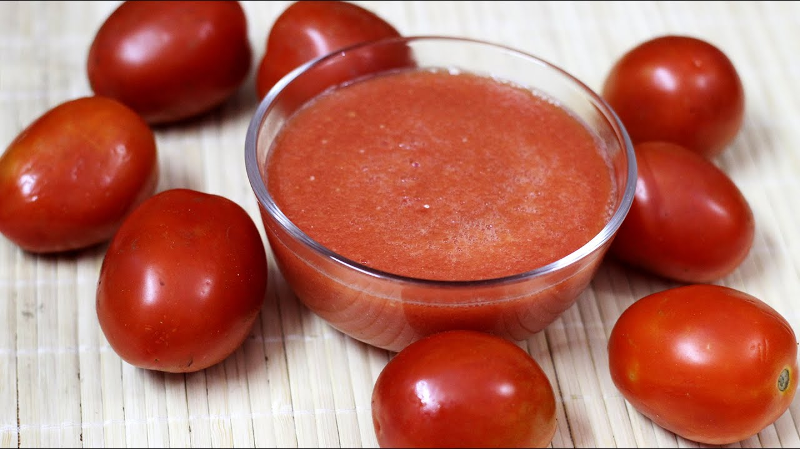
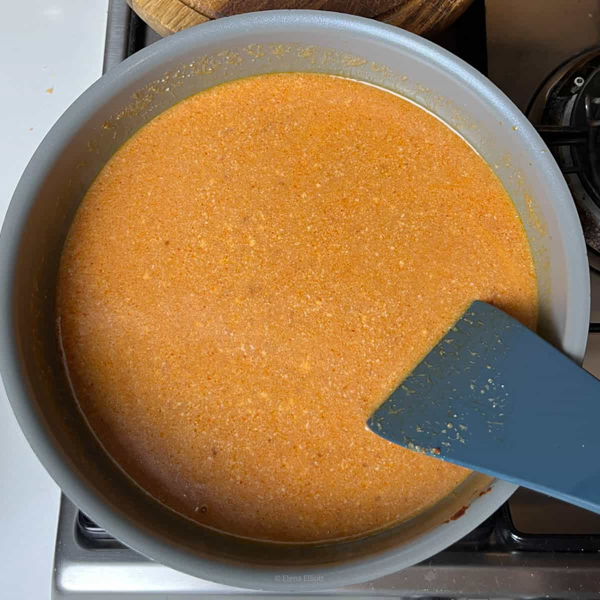
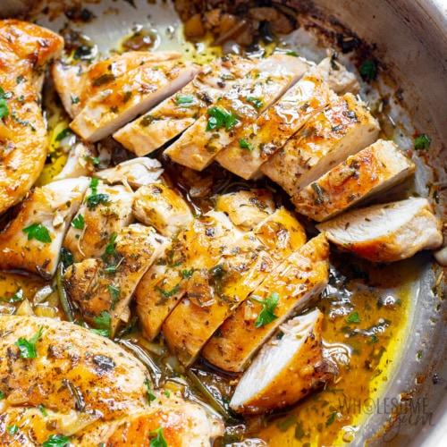

Make the BEST Butter Chicken at home with this authentic Indian recipe.
This Murgh Makhani is flavor-packed,creamy,delicious and tastes better than your favorite Indian restaurant version
All you need is abowl of Basmati rice or some Naans to mop up the luxurious sauce.
For this recipe you require 500 grams boneless chicken.
You can use thighs or breasts like the way I use. Alot of people prefer thights for the flavor and additional fats.
If using chicken breasts be prepared to leaves it in the marinade for a minimum of 12 hours for best resaults.
1. Here are the ingredience to marinate the chicken:
2. Make sure there is no excuse moisture on your chicken.
Pat dry with kitchen tissue/paper, if require.
Add chili powder,sault and lemon sauce.
Mix well, cover and rest for 20 minutes.
3. Later add ginger garlic paste,garam masala,
cumin powder,coriander powder,kasuri methi,turmeric and hung curd/Greek yogurt.
Let the chcicken rest in the marinade for 12 hours.
The longer you leave the more tender and jicier the chicken will be.
you can leave ths for a maximum of 48 hours
4. When you are ready to make the sauce, prepare the following ingredience.
Keep the chicken out of the refrigerator, as we dont want to grill/pan-fry cold chciken.
5.I have updated this recipe to use onions.
It is optional but helps to cut down the sour taste of tomatos, especiall if you are using canned tomatos.
Saute 1 cup sliced onions in 1 tablespoon oil until slightly golden, for 7 to 8 minutes.
Cool down and add to the blender
To the same blender jar add tomatoes -- you can either use 600 grams diced fresh tomatoes or 1 cup passata/canned tomato puree.
Also add 28 whole cashews and half cup water to the blender.
6.To make the cashew cream, I grind the cashews first to a powder and then add 1/4 cup water,grind again
Pour another 1/4 cut water and grind once more. Puree them very spooth
7.Heat 2 tablespoons butter ina pan.Add whole dices --cinnamon,cloves and cardamoms.
Once they begin to sizzle,add ginger garlic paste, green chilies and fry on medium heat.

Skew the chicken on to soaked wooden skewers or place on a greased tray and bake for 20 to 22 minutes, depending on the size of chicken pieces
In between you will have to turn to the other side.
Fry on medium heat for 2 mins.Ignore the moisture oozing out of the chicken.
Turn the chicken pieces to the other side,dont burn and do not overcook.
